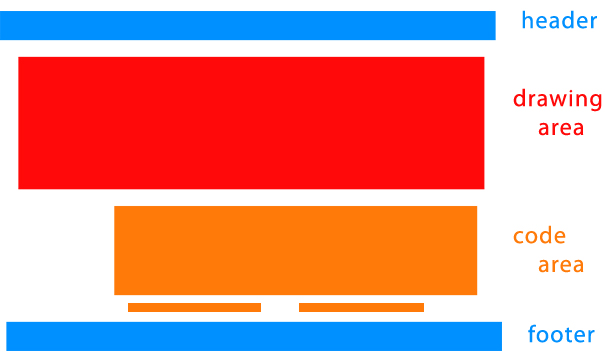
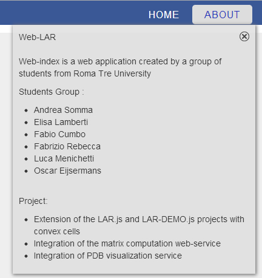
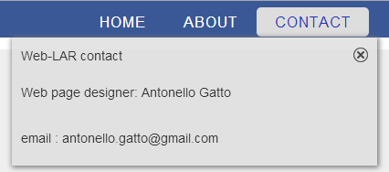
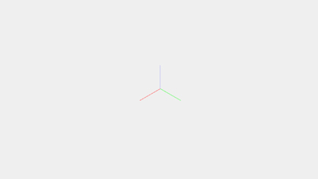
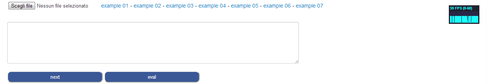
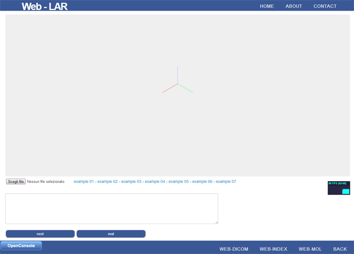

name: inverse layout: true class: center, middle, inverse --- #WEB-VISUAL user interface for Web-LAR ##GATTO ANTONELLO Matricola: 418405 Roma Tre Corso di Informatica Biomedica 2012/2013 <h6>prof. A. Paoluzzi M. Ceccanti</h6> .footnote[Go to directly to [project site](https://marley1990.github.io/WEB-VISUAL/Web-index.html)] --- layout: false #Web-LAR UI ###.blu[What's the target?] ###The Web-LAR project must be able to upload a text file containing code, divided in steps, evaluates them through LAR operations and draw the result. ##.blu[The target creating Web-LAR UI is to provide good organization and proper drawing area, keeping Web-visual pages style.] --- class: middle ##Page prototype  --- #Web-LAR UI ###.blu[Which are work tools?] - ###HTML + CSS ### design pages content and elements styles - ###Javascript + jQuery ### button functions - ###Plasm.js ### drawing area --- #Header ##.blu[HTML] ```html <div id="header-wrapper"> <div id="header"> <div id="logo"> <h1><a>Web - LAR</a></h1> </div> <div id="menu"> <ul> <li><a href="bihomed.html?#home" title="home">Home</a></li> <li><a id="weblar-link-about" href="#">About</a></li> <li><a id="weblar-link-contact" href="#">Contact</a></li> </ul> </div> </div> </div> ``` --- #Header ##.blu[CSS - logo] ```css /* Logo */ #logo { float: left; width: 310px; height: 40px; padding: 0px 0px 0px 40px; } #logo h1 { padding: 5px 0px 0px 0px; letter-spacing: -2px; font-size: 2.6em; text-decoration: none; color: #FFFFFF; } ``` --- #Header <span></span> <div> </div> </br> ##.blu[CSS - menu] .pull-left[ ```css /* Menu */ #menu { float: right; width: 810px; height: 40px; padding: 8px 10px 0px 0px; } #menu ul { float: right; margin: 0; padding: 5px 0px 0px 0px; list-style: none; line-height: normal; } #menu li { float: left; } ``` ] .pull-right[ ```css #menu a { margin-left: 1px; padding: 7px 20px 7px 20px; letter-spacing: 1px; text-decoration: none; text-align: center; text-transform: uppercase; font-family: 'Oswald', sans-serif; font-size: 16px; font-weight: 300; color: #FFFFFF; } #menu a:hover { text-decoration: none; background: #DDDDDD; border-radius: 5px; color: #1f31bb; } ``` ] --- #About/Contact <span></span> <div>   </div> </br> --- #About/Contact ##.blu[HTML + CSS] .pull-left[ ```html <div id="weblar-container-about" class="weblar-container"> <div id="weblar-icon-close" class="icon-close"></div> ... </div> <div id="weblar-container-contact" class="weblar-container"> <div id="weblar-icon-contact-close" class="icon-close"></div> ... </div> ``` ] .pull-right[ ```css .weblar-container { top: 40px; width: 380px; margin-left: auto; margin-right: auto; vertical-align:middle; position: absolute; z-index: 1000; display: none; padding: 10px; background-color: rgba(222,222,222,0.8); box-shadow: 1px 1px 8px 1px #777; } #weblar-container-about { right: 13%; } #weblar-container-contact { right: 3%; } ``` ] --- #About/Contact ##.blu[Javascript + jQuery] .pull-left[ ```javascript $(function () { var contactContainer = $('#weblar-container-contact'); var aboutContainer = $('#weblar-container-about'); var contactButton = $('#weblar-link-contact'); var aboutButton = $('#weblar-link-about'); var aboutClose = $('#weblar-icon-close'); var contactClose = $('#weblar-icon-contact-close'); var clear = function () { contactContainer.hide(); aboutContainer.hide(); }; contactButton.on('click', function () { clear(); contactContainer.show(); }); ``` ] .pull-right[ ```javascript aboutButton.on('click', function () { clear(); aboutContainer.show(); }); aboutClose.on('click', function () { aboutContainer.hide(); }); contactClose.on('click', function () { contactContainer.hide(); }); $(document).on('keyup', function (event) { if(event.keyCode == 27) { clear(); } }); }); ``` ] --- #Drawing area ##.blu[Plasm.js graphic engine]  --- #Drawing area .pull-left[ ##.blu[HTML] ```html <div id="plasm" class="container"> <div id="div_plasm"></div> </div> ``` ] .pull-right[ ##.blu[Plasm.js] ```javascript var plasm; plasm = new Plasm('div_plasm', 'div_framerate'); ``` ] <span></span> <p> <br> ###Plasm constructor - defined in Plasm.js file - take a cople (container, inspector) ###to create a 3D model canvas. </p> --- #Code area <br><br>  ###input button; examples downloads; step code textarea; ###2 buttons: steps skipper - current step evaluater; --- #Code area ##.blu[HTML + CSS] .pull-left[ ```html <div class="container-fluid"> <div> <input id="input_file" type="file"/> <a id="example_01" href="examples/example_01.js" download>example 01</a> <span>-</span>...<span>-</span> <a id="example_07" href="examples/example_07.js" download>example 07</a> <div id="div_framerate" style="float:right"></div> </div> <div> <textarea id="textarea_code" rows="5"/> </div> <div style="float:left"> <button id="button_next">next</button> <button id="button_eval">eval</button> </div> </div> ``` ] .pull-right[ ```css /*container margin-padding css omitted*/ #textarea_code{ width: 60%; } #button_next, #button_eval { height: 30px; width: 250px; background-color: #3A5896; border-radius: 10px; color: #FFF; } ``` ] --- #Footer ##.blu[HTML] ```html <footer class="footer"> <div style="float:left"> <input id="showConsole" type="button" value="OpenConsole" onclick="toggleConsole();" > <label id="label-console" for="" style="display:inline;color:#FFF;font-size:1.3em"></label> </div> <div id="menu"> <ul class="nav"> <li><a href="Web-dicom.html">Web-Dicom</a></li> <li><a href="Web-index.html">Web-Index</a></li> <li><a href="http://cvdlab-bio.github.io/webmol/">Web-Mol</a></li> <li><a href="index.html">Back</a></li> </ul> </div> <div id="consl" style="display:none"> ...<!-- console html --> </div> </footer> ``` --- class:center #Complete user interface  ###Click to visit the [Web-LAR page](http://marley1990.github.io/WEB-VISUAL/Web-lar.html).